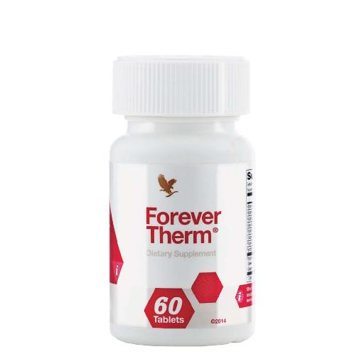
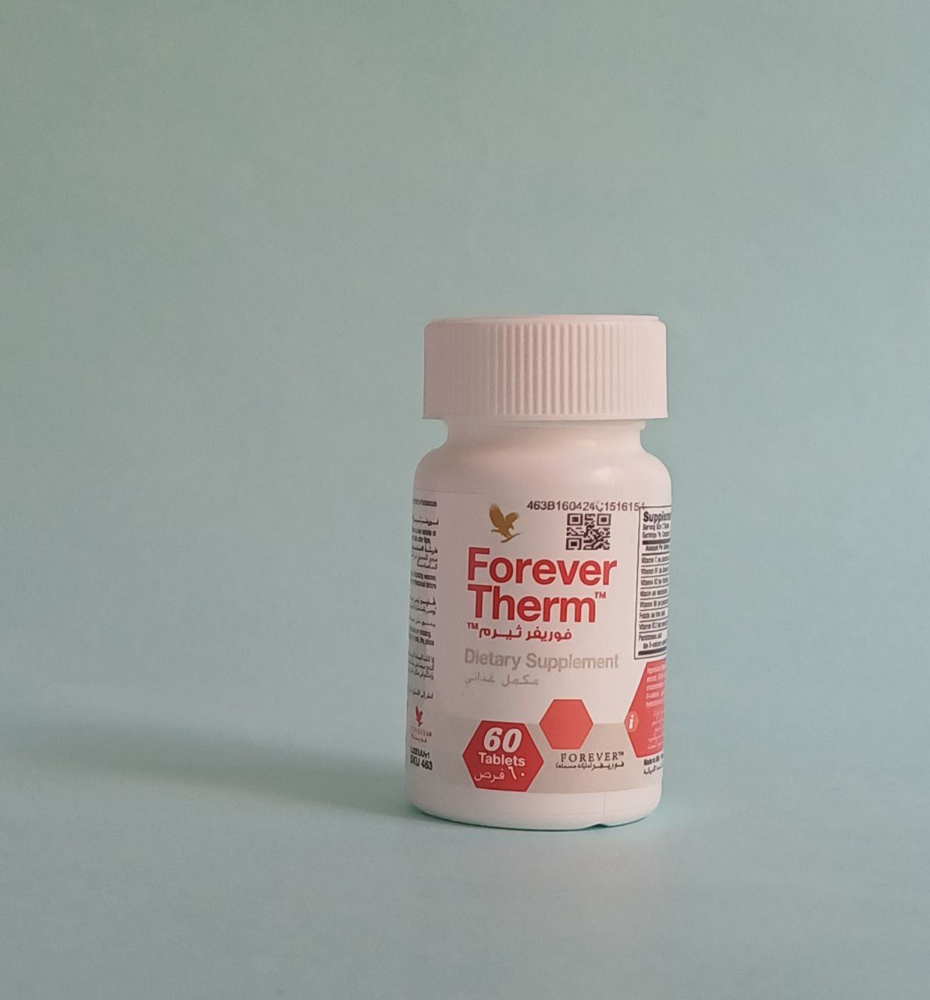
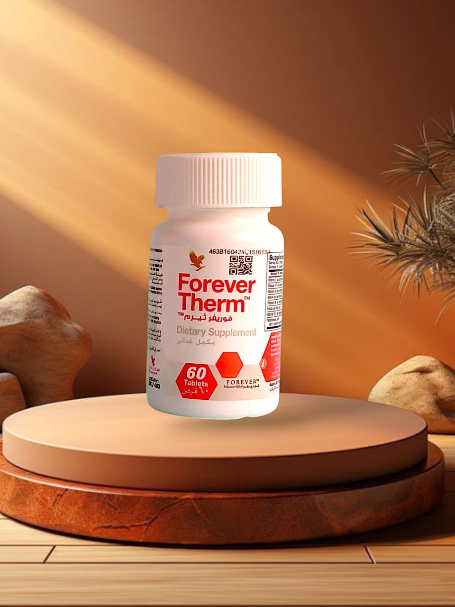

معزز التمثيل الغذائي الطبيعي
عزز عملية التمثيل الغذائي الخاصة بك مع فوريفر ثيرم™، في مسيرة فقدان الوزن. لقد اخترنا المكونات الرئيسية لدعم توليد الحرارة، مما ترفع درجة حرارة جسمك لتحفيز حرق السعرات الحرارية والدهون.
يمكن أن يساعد فوريفر ثيرم™ في تسريع نتائجك بفضل المكونات الطبيعية الموجودة في كل حبة، بالاضافة الى إدارة الوزن وممارسة التمارين الرياضية المناسبة.
يحتوي الفوريفر ثيرم™ أيضًا على كيتونات التوت، التي ثبت أنها تدعم عملية الأيض للدهون. تدعم الفيتامينات B و C الأساسية وظيفة التمثيل الغذائي وتحافظ على تزويدك بالفيتامينات التي يتم استنفادها أثناء التمرين الرياضية.
كما يوفر فوريفر ثيرم™ الكافيين من مصادر طبيعية مثل الغوارانا وحبوب البن الخضراء للحفاظ على نشاطك وتحفيزك لتمارينك أو لأيام طويلة في المكتب. على عكس حبوب البن المحمصة، تحتوي القهوة الخضراء على مستويات أعلى من المكونات الهامة، بما في ذلك حمض الكلوروجينيك للمساعدة في دعم مستويات السكر الطبيعية في الدم.